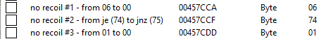

# CoD4 Cheats
Refer to the sub-nodes for cheats that require more explanation.
In here is simple to explain stuff.
## Radar
•
https://www.unknowncheats.me/wiki/2D_Radar_CoD4
- Create a 2d radar
•
https://www.unknowncheats.me/wiki/How_To_Find_offsets_CoD4
- 1 byte change to show all enemies on radar
## No Recoil
•
https://www.unknowncheats.me/wiki/How_To_Find_offsets_CoD4
- Some simple no recoil hacks in here
•
https://www.unknowncheats.me/forum/call-of-duty-4-modern-warfare/59705-real-spread.html
- Some genius reversed it
There are 3 different easy hacks to create no recoil on CoD4.
For CoD4 1.7.568:

A more proper way is to modify the weapon struct
(refer to link above)
## No Spread
•
https://www.unknowncheats.me/wiki/How_To_Find_offsets_CoD4
- In here
## Wallhack
•
https://www.unknowncheats.me/wiki/Wallhacks_for_players,_items,_helicopters_and_more_CoD4
- Bunch of patches to show players, items, helicopters, through walls
•
https://www.unknowncheats.me/wiki/Patch_Engine_ESP_CoD4
## Weapons
•
https://www.unknowncheats.me/forum/509101-post4.html
•
https://www.unknowncheats.me/forum/call-of-duty-4-modern-warfare/428399-cod4x-18-5-a.html
•
https://www.unknowncheats.me/forum/547625-post3.html
- Weapon Icon ESP
## Aimbot
•
https://www.unknowncheats.me/forum/call-of-duty-4-modern-warfare/60356-cod4-aimbot.html
•
https://github.com/Boboo99/SN7313_IW5MP/blob/master/Boboo's%20MultiHack/Source/Aimbot.cpp
- Lots of different aimbots shown here
•
https://www.unknowncheats.me/forum/call-of-duty-4-modern-warfare/66229-usercmd_t.html
- Modify the angles sent to the server without changing the visual angles
## Other
Double bounce?
https://xoxor4d.github.io/research/cod4-doublebounce/
## Util
Utility functions that are always useful.
### IsVisible
Check if an enemy is visible.
Refer to the Internal Functions subnode.
Links:
•
https://www.unknowncheats.me/forum/call-of-duty-4-modern-warfare/57506-isvisible.html